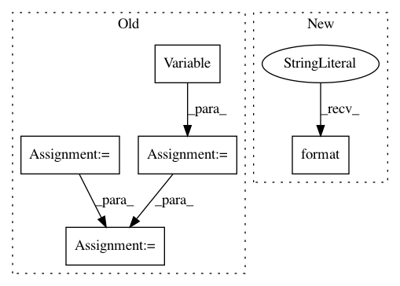

61421e8d341312e02dff23b46acde4261808dab3,train.py,,,#,15
Before Change
train_batch[key] = train_batch[key].cuda()
// forward pass to encoder
img = Variable(train_batch["img_feat"])
ques = Variable(train_batch["ques_fwd"])
hist = Variable(train_batch["hist"])
enc_out = encoder(img, ques, hist)
// forward pass to decoder
options = Variable(train_batch["opt"])
ans_ind = Variable(train_batch["ans_ind"])
After Change
args = parser.parse_args()
for arg in vars(args):
print("{:<20}: {}".format(arg, getattr(args, arg)))
// seed for reproducibility
torch.manual_seed(1234)
In pattern: SUPERPATTERN
Frequency: 3
Non-data size: 5
Instances
Project Name: batra-mlp-lab/visdial-challenge-starter-pytorch
Commit Name: 61421e8d341312e02dff23b46acde4261808dab3
Time: 2018-07-06
Author: karandesai281196@gmail.com
File Name: train.py
Class Name:
Method Name:
Project Name: OpenNMT/OpenNMT-py
Commit Name: b87368e1e7fd832b505db9cc08015ac7af8f95de
Time: 2016-12-23
Author: jvanamersfoort@twitter.com
File Name: VAE/main.py
Class Name:
Method Name: train